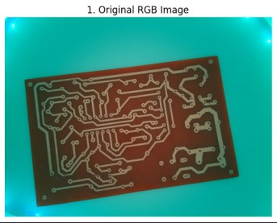
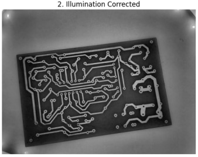
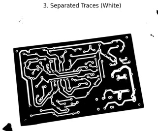
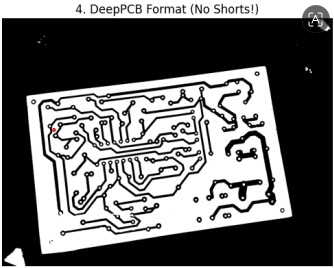

Week 12: Robust Image Pre-Processing & Defect Target Extraction
Date range: [2026-07-20 to 2026-07-24]
This week focused on developing a highly robust OpenCV pre-processing pipeline capable of isolating bright copper traces from PCB backgrounds, correcting non-uniform illumination, and applying advanced morphological mathematics to sever unwanted short circuits prior to deep learning analysis.
Milestones & Accomplishments Summary
💡 HSV Illumination Correction
Implemented Bilateral Filtering and CLAHE (Contrast Limited Adaptive Histogram Equalization) on the HSV Value channel to normalize harsh glares and uneven lighting across the board surface.
🎯 Otsu's Global Thresholding
Utilized cv2.THRESH_BINARY + cv2.THRESH_OTSU to dynamically separate the foreground traces from the background, ensuring all traces are isolated as pure white pixels for subsequent mathematical operations.
✂️ Morphological Separation
Deployed structural Erosion kernels specifically targeted at severing trace short circuits caused by camera glare, successfully thinning bloated paths while removing static via Morphological Opening.
DeepPCB Pre-Processing Pipeline Breakdown
Our V3 pre-processing algorithm utilizes a strict 4-stage computer vision sequence to construct pristine DeepPCB-formatted masks:
Stage 1: Contrast Enhancement
Raw RGB imagery is converted to HSV space. We extract the V (Value/Brightness) channel and apply a Bilateral Filter (d=9, σColor=75, σSpace=75) to smooth out noise without blurring strict trace edges. CLAHE is then applied to the V-channel to equalize uneven lighting before converting the matrix back to grayscale.
Stage 2 & 3: Thresholding and Morphological Short-Circuit Fixes
Because aggressive Otsu thresholding can cause slight visual bleeding (creating artificial short circuits between traces), we enforce the following morphological steps:
- Otsu Extraction (White Traces): We use
cv2.THRESH_BINARY. Traces must be white for OpenCV's morphological math to shrink them correctly. - Morphological Opening: A 3×3 rectangular kernel removes tiny static and background dust anomalies.
- Erosion Separation: A subsequent 3×3 Erosion pass acts as a physical shaving mechanism. It trims a layer of pixels off the white traces, thinning them out and cleanly severing any unwanted bridges (short circuits) between paths.
Stage 4: DeepPCB Format Target
With the traces perfectly separated and cleaned, a final cv2.bitwise_not() operation inverts the mask. This yields the exact input format required by our target dataset: Pure Black Traces on a Pure White Background.
Interactive Project Resources & Links
Access our live pre-processing notebooks and testing scripts below:
Implementation Source Code Snippets
1. Optimal Pre-Processing Pipeline (V3)
import cv2
import numpy as np
import matplotlib.pyplot as plt
def optimal_pcb_pipeline_v3(image_path):
# --- LOAD IMAGE ---
img = cv2.imread(image_path)
if img is None:
print(f"❌ ERROR: Could not find '{image_path}'. Please check your upload!")
return
img_rgb = cv2.cvtColor(img, cv2.COLOR_BGR2RGB)
# ====================================================================
# STAGE 1: HSV-Based Illumination Correction & Contrast Enhancement
# ====================================================================
hsv = cv2.cvtColor(img, cv2.COLOR_BGR2HSV)
h, s, v = cv2.split(hsv)
v_filtered = cv2.bilateralFilter(v, d=9, sigmaColor=75, sigmaSpace=75)
clahe = cv2.createCLAHE(clipLimit=2.0, tileGridSize=(8,8))
v_enhanced = clahe.apply(v_filtered)
hsv_enhanced = cv2.merge([h, s, v_enhanced])
img_enhanced = cv2.cvtColor(hsv_enhanced, cv2.COLOR_HSV2BGR)
gray_enhanced = cv2.cvtColor(img_enhanced, cv2.COLOR_BGR2GRAY)
# ====================================================================
# STAGE 2: Otsu's Global Thresholding (White Traces)
# ====================================================================
# FIX: We use THRESH_BINARY (not INV). Traces MUST be white for
# the morphological math to shrink/clean them properly.
ret, binary_mask = cv2.threshold(gray_enhanced, 0, 255, cv2.THRESH_BINARY + cv2.THRESH_OTSU)
# ====================================================================
# STAGE 3: Morphological Cleanup & Separation (Fixing Shorts)
# ====================================================================
# 1. Opening: Removes tiny static/dust from the background
kernel_open = cv2.getStructuringElement(cv2.MORPH_RECT, (3, 3))
cleaned_mask = cv2.morphologyEx(binary_mask, cv2.MORPH_OPEN, kernel_open, iterations=1)
# 2. Erosion: THIS FIXES THE SHORT CIRCUITS.
# It shaves a layer of pixels off the white traces, thinning them
# out and severing any unwanted bridges between paths.
kernel_erode = cv2.getStructuringElement(cv2.MORPH_RECT, (3, 3))
separated_mask = cv2.erode(cleaned_mask, kernel_erode, iterations=1)
# ====================================================================
# STAGE 4: Convert to DeepPCB Format
# ====================================================================
# Now that the traces are perfectly separated, we invert the image
# to get Black Traces on a White Background.
final_deeppcb_mask = cv2.bitwise_not(separated_mask)
# --- PLOTTING THE PIPELINE ---
fig, axes = plt.subplots(1, 4, figsize=(20, 6))
axes[0].imshow(img_rgb)
axes[0].set_title('1. Original RGB Image')
axes[0].axis('off')
axes[1].imshow(gray_enhanced, cmap='gray')
axes[1].set_title('2. Illumination Corrected')
axes[1].axis('off')
axes[2].imshow(separated_mask, cmap='gray')
axes[2].set_title('3. Separated Traces (White)')
axes[2].axis('off')
axes[3].imshow(final_deeppcb_mask, cmap='gray')
axes[3].set_title('4. DeepPCB Format (No Shorts!)')
axes[3].axis('off')
plt.tight_layout()
plt.show()
return final_deeppcb_mask
# Run the updated pipeline
# Make sure your file name matches the one in your directory
final_image = optimal_pcb_pipeline_v3('pcb_hq_01.jpg')Pipeline Visual Output
Demonstration of the morphological operations separating bridging traces and establishing the final format:




Next Week Plan
- Handle final presentation preparation and documentation submission.
- Compile and review final execution metrics for the Raspberry Pi 5 QAT deployment.
- Finalize project demonstration files.